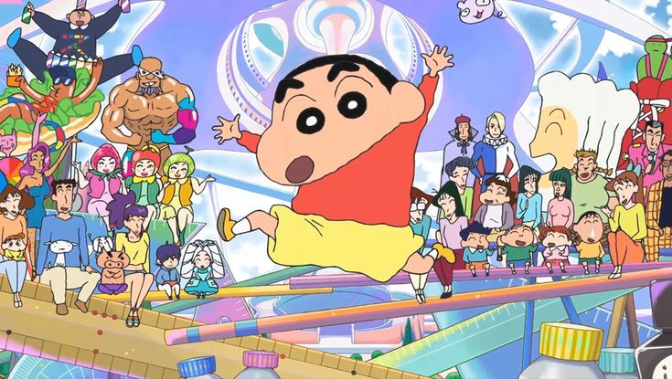
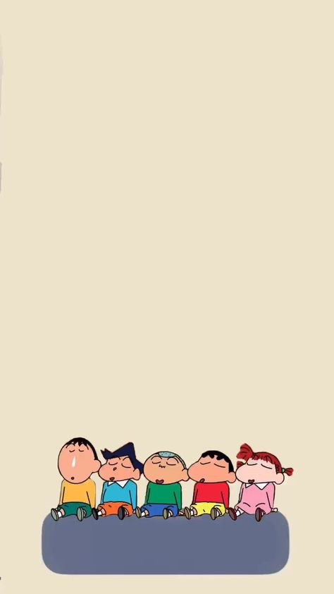
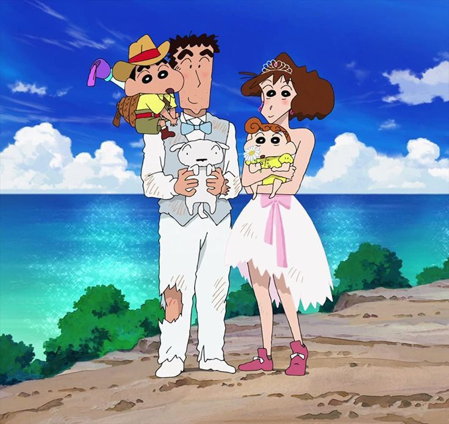

網站首頁
角色介紹
劇場版
劇情介紹
聯絡我

劇情介紹
《蠟筆小新》（日文原名：クレヨンしんちゃん / Crayon Shin-chan）是由臼井儀人創作的日本經典漫畫及動畫系列，自1990年開始連載，1992年改編為電視動畫，至今風靡全球。作品以幽默、搞笑、溫馨為主調，講述了主角野原新之助和家人、朋友日常生活中的各種趣事，展現出小朋友純真的童趣和大人世界的荒謬。

相關評價
《蠟筆小新》以其幽默、溫馨和深刻的社會洞察，成為一部跨越年齡層與文化的經典作品。它既是一部適合兒童觀看的搞笑動畫，也是一面反映現實的社會之鏡。雖然在內容和角色塑造上存在一些爭議，但無可否認的是，《蠟筆小新》在動畫史上的地位不可動搖。它陪伴了無數人成長，並將繼續以其獨特的魅力感染更多的觀眾。
作者背景
臼井儀人以《蠟筆小新》為全球讀者帶來歡笑和感動，該作品成為日本文化輸出的重要代表之一。無論是電視動畫還是電影版，《蠟筆小新》至今仍持續創作，影響力橫跨多個世代。臼井儀人以他獨特的幽默風格和簡約畫風，啟發了許多後來的漫畫家，為搞笑漫畫樹立了標竿。